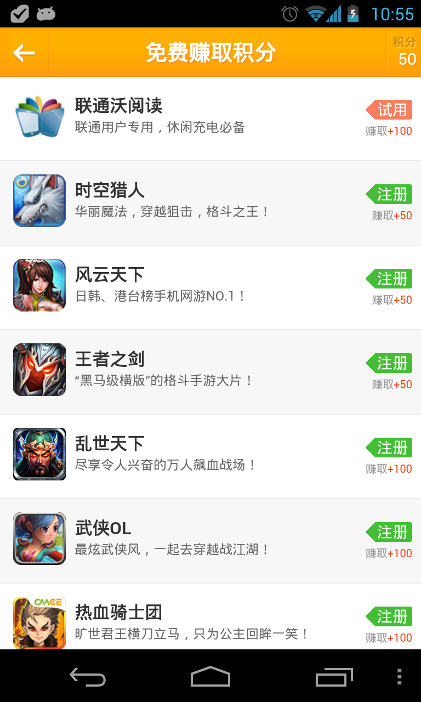

Youmi Android SDK met its big change in its 4.02 version, and it united all ad forms and other practical service provided by Youmi network. Youmi Ad here divided into two big ad forms of incentive ad and non-incentive ad. Non-incentive ad includes banner, interstitial and Ad-wall. Incentive-ad mainly contains Offerwall and other ad presence supporting Offerwall entrance. Youmi Ad service also includes the update-check and online configuration.
*There is a big change of SDK V4.0 and all the configuration please refer to the documentation herein. If you are implementing Youmi Offerwall SDK V2.0 or Banner SDK V 3.0, Please eliminate all the ad configuration first, and then integrate the new SDK in accordance to the steps listed in this file.
v4.03
v4.02
1). Click on Add an APP to create an app account on Youmi website.
2). Check APP Info , to obtain AppID and Sercret, and you will need them in initialization afterwards.
Import YoumiSdk_*.jar to your project.
1). Right click on the root directory of your project, select "New" and choose "Folder", and anme Folder name as "libs"
2). Copy YoumiSdk_.jar to the libs file in root directory of project
3). Right click on YoumSdk_.jar, select "Build Path" and then choose "Add to Build Path"
4). Successfully imported
Configure user permission in AndroidManifest.xml file
Please copy the following code to AndroidManifest.xml file:
<uses-permission android:name="android.permission.INTERNET"/>
<uses-permission android:name="android.permission.READ_PHONE_STATE"/>
<uses-permission android:name="android.permission.ACCESS_NETWORK_STATE" />
<uses-permission android:name="android.permission.ACCESS_WIFI_STATE"/>
<uses-permission android:name="android.permission.WRITE_EXTERNAL_STORAGE"/>
<!--Hereunder ONE permissions are optional-->
<uses-permission android:name="com.android.launcher.permission.INSTALL_SHORTCUT"/>
Make sure to implement ad right, please configure AdBrowser, AdReceiver and AdService [must]
Please copy the following code to Application node in AndroidManifest.xml:
<activity
android:name="net.youmi.android.AdBrowser"
android:configChanges="keyboard|keyboardHidden|orientation"
android:theme="@android:style/Theme.Light.NoTitleBar" >
</activity>
<service
android:name="net.youmi.android.AdService"
android:exported="false" >
</service>
<receiver
android:name="net.youmi.android.AdReceiver" >
<intent-filter>
<action android:name="android.intent.action.PACKAGE_ADDED" />
<data android:scheme="package" />
</intent-filter>
</receiver>
To avoid any typing mistakes, please copy the above code directly.
To implement incentive ad properly, please must configure OffersReceiver, otherwise user may not able to receive points. (Please ignore this part if you are not integrating Offerwall ad)
Please copy the following code to Application node in AndroidManifest.xml的Application:
<receiver
android:name="net.youmi.android.offers.OffersReceiver"
android:exported="false" >
</receiver>
Currently Youmi already cooperate with many domestic app distribution channels. Whenever your app is rejected by the app stores and they requires you to add their channel mark, you can add channel mark in the following way.
Channel Mark details please refer to:Youmi Channel List
Please add the following code to AndroidManifest.xml:
<meta-data android:name="YOUMI_CHANNEL"
android:value="Here replace with the corresponding channel mark" >
</meta-data>
Please must invoke AdManager.getInstance(context).init on the onCreate in main Activity to initialize the AppID, Secert and Testmode, etc. Here please get the AppID and Secret from Aplly for AppID
Cpding Instance:
package com.test
import android.app.Activity
import net.youmi.android.AdManager;
/**
* This is the Main Activity
*/
public class YourMainActivity extends Activity {
@Override
protected void onCreate(Bundle savedInstanceState) {
// TODO Auto-generated method stub
super.onCreate(savedInstanceState);
// Initial AppID, Secret and set the test mode
AdManager.getInstance(this).init("AppID","Secret", false);
}
}
！Please set the test mode to FALSE before uploading for review.
！Before approval you only can see test ad running in your app on your device or the imitator; After review and approved the app starts receiving official ad on device, but test ad on imitator still.
If you implement proguard for packing in your project, please must add following code to proguard-project.txt, otherwise you may fail to receive ads:
-dontwarn net.youmi.android.**
-keep class net.youmi.android.** {
*;
}
!p.s: Please must configure OffersReceiver
If your app do have created independent user account system and allows user freely switch accounts, you may need to track the point record of each account. Allocating specific identifier for user helps you to distinguish points from different account on the same device.
Sample code:
// Invoke the following API as the unique identifier for your user
OffersManager.getInstance(this).setCustomUserId("abcdefg_123");
p.s: The user identifier shall be "letter-number-underline" combination *This setting applies to custom credit accountandServer-end point order callback *
Please must invoke the initialization API respectively in onCreate of Main Activity in the starting code. Sample Code:
package com.test
import android.app.Activity
import net.youmi.android.AdManager;
import net.youmi.android.offers.OffersManager;
/**
* Here is your app Main Activity
*/
public class YourMainActivity extends Activity {
@Override
protected void onCreate(Bundle savedInstanceState) {
// TODO Auto-generated method stub
super.onCreate(savedInstanceState);
// Initial AppID and Secret, and set the test mode
AdManager.getInstance(this).init("AppID","Secret", false);
// Please must invoke the following code to inform SDK of the app starting, to allow some initialization operation of SDK. This API must be invoked after the initialization.
OffersManager.getInstance(this).onAppLaunch();
}
}

Invoke OffersManager.getInstance(this).showOffersWall() to display the full-page Offerwall. Sample Code:
import android.app.Activity
import net.youmi.android.offers.OffersManager;
....
//Invoke showOffersWall to display the full-page Offerwall
OffersManager.getInstance(this).showOffersWall();
....
Here Offerwall direction will follow the system setting by default. If you need to force the Offerwall display as portrait or landscape, you only need to configure AdBrowser in AndroidManifest.xml. Set it to portrait:
<activity
android:name="net.youmi.android.AdBrowser"
android:configChanges="keyboard|keyboardHidden|orientation"
android:screenOrientation="portrait"
android:theme="@android:style/Theme.Light.NoTitleBar" >
</activity>
set it to landscape:
<activity
android:name="net.youmi.android.AdBrowser"
android:configChanges="keyboard|keyboardHidden|orientation"
android:screenOrientation="landscape"
android:theme="@android:style/Theme.Light.NoTitleBar" >
</activity>

Here you only need to invoke showOffersWallDialog(Activity activity) of offersManager. If you want to set the size of poo-up offerwall window, please invoke its function as follow.
Sample Code:
import android.app.Activity
import net.youmi.android.offers.OffersManager;
....
//Hereunder are three optional ways to invoke:
//*1.Invoke showOffersWallDialog to show the poo-up window of Offerwall by default:
OffersManager.getInstance(this).showOffersWallDialog(this);
//*2.Set the pixel value of width and length (p.s: please make sure setting the best value for portrait so that the SDK will adapt to the screen direction automatically):
OffersManager.getInstance(this).showOffersWallDialog(this,300,400);
//*3.Pencentage of the width and length to the screen (p.s: the value type is double, please make sure it is between 0 and 1)
OffersManager.getInstance(this).showOffersWallDialog(this,0.9d,0.95d);
....
To display incentive banner, define 60dp height incentive banner as the incentive banner, and define 32dp height banner as the incentive mini banner. Instantiate incentive banner via OffersBanner and OffersAdSize.
Hereunder are some size definitions of OffersAdSize:
Image 01 (portrait):

Image 02 (landscape):

1).configure layout file
Copy the following code to the layout file of the Main Activity in which you need to display your ad, and put it in the right place:
<RelativeLayout android:id="@+id/offersAdLayout"
android:layout_width="fill_parent"
android:layout_height="wrap_content"
android:gravity="center_horizontal">
</RelativeLayout>
2).Add the incentive banner to layout
Please add the following code to the Activity class in which you need to display ad:
...
import net.youmi.android.offers.OffersBanner;
import net.youmi.android.offers.OffersAdSize;
...
//obtain the layout for incentive banner integration
RelativeLayout adLayout=(RelativeLayout)findViewById(R.id.offersAdLayout);
//demo 1 incentive Banner: full width, height 60dp
OffersBanner banner = new OffersBanner(this, OffersAdSize.SIZE_MATCH_SCREENx60);//OffersAdSize height 60dp to define incentive banner
//demo 2 incentive Banner: width 320dp and height 60dp
OffersBanner banner = new OffersBanner(this, OffersAdSize.SIZE_320x60);//OffersAdSize height 60dp to define incentive banner
//demo 3 incentive mini Banner: full width, height 32dp
OffersBanner banner = new OffersBanner(this, OffersAdSize.SIZE_MATCH_SCREENx32);//OffersAdSize height 32dp to define incentive mini banner
//demo 4 incentive mini Banner: width 320dp and height 32dp
OffersBanner banner = new OffersBanner(this, OffersAdSize.SIZE_320x32);//OffersAdSize height 32dp to define incentive mini banner
//add incentive banner to layout
adLayout.addView(banner);
Please add the following code to onCreate of Activity in which you need to display ad:
//Instantiate LayoutParams(important)
FrameLayout.LayoutParams layoutParams = new FrameLayout.LayoutParams(
FrameLayout.LayoutParams.FILL_PARENT,
FrameLayout.LayoutParams.WRAP_CONTENT);
//set the floating room for incentive banner
layoutParams.gravity = Gravity.BOTTOM | Gravity.RIGHT; // Here the sample is right down corner
//Instantiate Banner
OffersBanner banner = new OffersBanner(this, OffersAdSize.SIZE_MATCH_SCREENx60);//OffersAdSize height 60dp to define incentive banner
//invoke addContentView function of Activity
this.addContentView(banner, layoutParams);
On Youmi websiteDeveloper Dashboard you can freely set the switch banner display frequency, the color of the background and so on.
Offerwall SDK provides Points account managed, hereunder is the way to invoke:
sample code:
import android.app.Activity
import net.youmi.android.offers.OffersManager;
...
//Invoke queryPoints to obtain the points balance
int myPointBalance = PointsManager.getInstance(this).queryPoints();
Log.d("test","Points Balance as:"+myPointBalance);
...
Sample Code:
import android.app.Activity
import net.youmi.android.offers.PointsManager;
...
//Invoke spendPoints to consume points of certain amount, here taking 100 points consumption as an example
if(PointsManager.getInstance(this).spendPoints(100)){
Log.d("test","100 points spent");
}else{
Log.d("text","Consumption Error(Lacking points balance)");
}
...
Whenever user continously starts your app for several days or pass certain levels in one time, you can reward user some points/credits. Sample Code:
import android.app.Activity
import net.youmi.android.offers.PointsManager;
...
//Invoke awardPoints to reward user certain points, here taking 50 points reward as example
PointsManager.getInstance(this).awardPoints(50);
Log.d("test","Successfully reward 50 points");
...
SDK here provides the listener API to track any change of the points balance, and its change will update to the UI after refresh To listen to the balance change, please implement implements PointsChangeNotify API, and invoke registerNotify and unRegisterNotify of PointsManager respectively when initializing and ending, as the sample as follows:
package com.test
import net.youmi.android.offers.OffersManager;
import net.youmi.android.offers.PointsChangeNotify;
import net.youmi.android.offers.PointsManager;
import android.app.Activity;
public class YourTestActivity extends Activity implements PointsChangeNotify {
@Override
protected void onCreate(Bundle savedInstanceState) {
// TODO Auto-generated method stub
super.onCreate(savedInstanceState);
//p.s: please must invoke registerNotify to register the listener, otherwise you may not able to receive the notification of balance change.
PointsManager.getInstance(this).registerNotify(this);
}
@Override
protected void onDestroy() {
// TODO Auto-generated method stub
super.onDestroy();
//p.s: please must invoke unRegisterNotify to cancel tracking
PointsManager.getInstance(this).unRegisterNotify(this);
}
@Override
public void onPointBalanceChange(int pointsBalance) {
// TODO Auto-generated method stub
//when this is invoked, it means that the points balance changes and here the pointsBalance is the current balance
Log.d("test","Points balance changes and the current balance is:"+pointsBalance);
//p.s: here you can perform UI display update and so on.
}
}
The abovementioned Tracking the Points Blance Change is only for tracking the points balance. If you want to track the order details, please implement the Tracking points order API.
Firstly, you may need to define a MyPointsReceiver class (with a random name), and it must carry on PointsReceiver: Sample Code::
package com.test;
import android.content.Context;
import net.youmi.android.offers.EarnPointsOrderList;
import net.youmi.android.offers.PointsReceiver;
public class MyPointsReceiver extends PointsReceiver{
@Override
protected void onEarnPoints(Context context, EarnPointsOrderList list) {
//When SDK receives the Points Order from user will inform you immediately.
//Parameter EarnPointsOrderList is a Points oeder list, and you can deal with the Points details order here.
}
@Override
protected void onViewPoints(Context context) {
//Here is an interesting function, whenever user earn points, SDK will push a notification to his device. This function will be invoked when user click on this notification.
//Here you can realize a direct, to lead user to a points balance page you designed. (such as Activity like "my account" and so on).
//This operation is optional, please invoke PointsManager.getInstance(context).setEnableEarnPointsNotification(false) if you need to disable the notification function.
}
}
Next step, please configure MyPointsReceiver on AndroidManifest.xml MyPointsReceiver:
Sample Code::
<receiver
android:name="MyPointsReceiver"
android:exported="false" >
<intent-filter>
<action android:name="ep_Please replace with your AppID" />
<action android:name="vp_Please replace with your AppID" />
</intent-filter>
</receiver>
p.s: here is an important detail, you must configure two Action for MyPointsReceiver and name it with the beginning of "ep_" and "vp_", and ends with string of your AppID.（AppID is the ID for your app applied on Youmi website, 16 characters, SO the full length of Action is 19 characters）
Appendix: definition of points order
EarnPointsOrderList:
package net.youmi.android.offers;
...
/**
* Points Order List
*
*/
public class EarnPointsOrderList {
/**
* Obtain the name of point unit on the server
*/
public String getCurrencyName();
/**
* According to index and receive the order details(EarnPointsOrderInfo)
*/
public EarnPointsOrderInfo get(int index);
/**
* See if the list is empty
*/
public boolean isEmpty();
/**
* Receive the items number of the list
*/
public int size();
}
EarnPointsOrderInfo:
package net.youmi.android.offers;
/**
* Order to earn points
*/
public final class EarnPointsOrderInfo {
/**
* obtain the order No. (exclusively)
*/
public String getOrderID();
/**
* obtain the channel No., here means the Youmi channel No. configured on AndroidManifest.xml, details please refer to the documentation
*/
public int getChannelId();
/**
* Obtain the unique user identifier defined by developer, and this can be set via OffersManager
*/
public String getCustomUserID();
/**
* Obtain the points order status:1. it means developer receives revenue and user obtains points. 2. it means developer fails to receive revenue but user obtain points. (in the test mode.)
*/
public int getStatus()
/**
* Discription of points obtain, such as "Successfully installed, and you have received 100 coins"
*/
public String getMessage();
/**
* Points obtained this time
*/
public int getPoints();
/**
* Settlement time this time
*/
public long getSettlingTime();
}
If you dont want to implementSDK points managed as we mentioned above, but want to realize points managed on your own (custom points account), plese refer to steps of Tracking Points Order to realize the points order listenning and the custom points management.
If you want to get notification on your server from Youmi server after user earns points, you can implement the Server-end Points Callback API.
Youmi Offerwall Points Order Server-end Callback Protocol
1.Please stick to the protocol instruction when you try to realize the order callback API.
2.Please must set the callback URL on developer dashboard of Youmi Website
P.S:Once you set the Points Order Callback URL, Youmi will inform your server of any successful order completes, but you will not receive any notice on your client-end like you do SDK Points Managed、Tracking Points Order and Custom Points Account will be disabled.
Allow user to know if he successfully earn points from Offerwall, SDK implement floating window and notification bar to send the arrival message. This function is enable by default, but you can disable it via relevant API of PointsManager.
Sample Code:
...
import net.youmi.android.offers.PointsManager
...
//Disable Points Arrival Notification Bar reminder
PointsManager.getInstance(this).setEnableEarnPointsNotification(false);
...
//Disable Points Arrival floating window reminder
PointsManager.getInstance(this).setEnableEarnPointsToastTips(false);
...
Pre-loading ad data will be invoked when the app starting, SDK will pre-load 3-5 ad banner material to local cache so that ads can be shown right after the API being invoked. Delay may happens if there is no data pre-loaded.
Invoke API
SpotManager.getInstance(this).loadSpotAds();
p.s: this parameter is carry on from class instance of Context
To display Interstitial ad, we mostly invoke it when app starts or game level clearance. Here developer can set the display frequency on the developer backend (detail info-business info-non-incentive ad-advanced setup) From V4.03 developer can set the enable/disable anti-misclick function on youmi backend.
SpotManager.getInstance(this).showSpotAds(this);
！AdSize provides developer four types of banner sizes: AdSize.FIT_SCREEN Phone/Pad
AdSize.SIZE_320x50 Phone
AdSize.SIZE_300x250 Phone/Pad AdSize.SIZE_468x60 Pad AdSize.SIZE_728x90 Pad
Copy the following code to layout file of the Activity in which you need to display ad, and put it on the right place:
<LinearLayout android:id="@+id/adLayout"
android:layout_width="fill_parent"
android:layout_height="wrap_content"
android:gravity="center_horizontal">
</LinearLayout>
Add the following code to the Activity class for ad display:
//Instantiate banner
AdView adView = new AdView(this, AdSize.SIZE_320x50);
//Receive layout to integrate banner
LinearLayout adLayout=(LinearLayout)findViewById(R.id.adLayout);
//Integrate banner to layout
adLayout.addView(adView);
Add the following code to the onCreate of Activity for ad display:
//Instantiate LayoutParams (important)
FrameLayout.LayoutParams layoutParams = new FrameLayout.LayoutParams(
FrameLayout.LayoutParams.FILL_PARENT,
FrameLayout.LayoutParams.WRAP_CONTENT);
//set the floating place for banner
layoutParams.gravity = Gravity.BOTTOM | Gravity.RIGHT; // Here in the instance is the right down corner
//Instantiate banner
AdView adView = new AdView(this, AdSize.SIZE_320x50);
//Invoke addContentView function of Activity
this.addContentView(adView, layoutParams);
Here SDK provides banner listener API, to monitor the status of banner
adView.setAdListener(new AdViewLinstener() {
@Override
public void onSwitchedAd(AdView adView) {
// Switch ad and display
}
@Override
public void onReceivedAd(AdView adView) {
// Successful ad request
}
@Override
public void onFailedToReceivedAd(AdView adView) {
// Ad request failure
}
});
Here Youmi SDK provides the version update check API to developer, you can invoke it to notify user any update information. When your updated app is uploaded on Youmi website and approved on review, the Youmi SDK update check API will receive the update info including the update notification and the new download URL.
API:
...
import net.youmi.android.AdManager
import net.youmi.android.dev.AppUpdateInfo
import net.youmi.android.dev.CheckAppUpdateCallBack;
...
//Invoking syncCheckAppUpdate or asyncCheckAppUpdate of AdManager to realize update check.
//Return value AppUpdateInfo includes update notification and download URL, if it shows null it means it is the latest version, and there is no further operation required.
//
//1.synchronous invocation:
AppUpdateInfo updateInfo=AdManager.getInstance(this).syncCheckAppUpdate(); //p.s: it must be invoked on non-UI thread, otherwise it may fail.
//
//2.asynchronous invocation:
AdManager.getInstance(this).asyncCheckAppUpdate(callback); //p.s: it can be invoke on any threads.
//
//when updateInfo is not null, please handle the notification and the download-install process on your own.
...
Sample(synchronous API and it must be invoke on non-UI thread, here in the sample we implement AsyncTask):
import net.youmi.android.AdManager;
import net.youmi.android.dev.AppUpdateInfo;
import android.app.AlertDialog;
import android.content.Context;
import android.content.DialogInterface;
import android.content.Intent;
import android.net.Uri;
import android.os.AsyncTask;
/*
*Here in the same it invokes update check API and it is defined by developer, carried on from AsyncTask
*
*/
public class UpdateHelper extends AsyncTask<Void, Void, AppUpdateInfo> {
private Context mContext;
public UpdateHelper(Context context) {
mContext = context;
}
@Override
protected AppUpdateInfo doInBackground(Void... params) {
try {
//In doInBackground to invoke checkAppUpdate of AdManager will receive update info from Youmi Server.
return AdManager.getInstance(mContext).syncCheckAppUpdate(); //It must be invoked on non-UI thread, otherwise it may fail.
} catch (Throwable e) {
// TODO: handle exception
e.printStackTrace();
}
return null;
}
@Override
protected void onPostExecute(AppUpdateInfo result) {
super.onPostExecute(result);
try {
if (result == null || result.getUrl() == null) {
//If the AppUpdateInfo is null or the attribute of its url is null, it may be considered as the latest version.
Toast.makeText(this, "Current App is the latest version", Toast.LENGTH_SHORT).show();
return;
}
//Here the sample implement floating window to show the update info
new AlertDialog.Builder(mContext)
.setTitle("Find the New Version")
.setMessage(result.getUpdateTips())//Here is the update info of the latest version
.setNegativeButton("update now",
new DialogInterface.OnClickListener() {
@Override
public void onClick(DialogInterface dialog,
int which) {
Intent intent = new Intent(
Intent.ACTION_VIEW, Uri
.parse(result
.getUrl()));
intent.addFlags(Intent.FLAG_ACTIVITY_NEW_TASK);
mContext.startActivity(intent);
//ps:Here the sample will simply invoke the inner browser to download the latest version when tap on (update now),
//but strongly recommand developer to realize its own download-install process, for better user experience guarantee.
}
})
.setPositiveButton("Next time",
new DialogInterface.OnClickListener() {
@Override
public void onClick(DialogInterface dialog,
int which) {
dialog.cancel();
}
}).create().show();
} catch (Throwable e) {
e.printStackTrace();
}
}
}
Sample(asynchronous API, use on any):
import net.youmi.android.AdManager;
import net.youmi.android.dev.AppUpdateInfo;
import net.youmi.android.dev.CheckAppUpdateCallBack;
import android.content.Context;
import android.app.Activity
import android.content.Intent;
import android.net.Uri;
/*
*Here is the sample of Activity invocation
*
*/
public class UpdateActivity extends Activity implements CheckAppUpdateCallBack{
@Override
protected void onCreate(Bundle savedInstanceState) {
//Invoke the update check API, here it can be invoked on UI thread, and non-UI as well.
AdManager.getInstance(this).asyncCheckAppUpdate(this);
}
@Override
public void onCheckAppUpdateFinish(AppUpdateInfo updateInfo) {
//Check update callback. p.s: the callback implemented on UI thread so that you can interact with UI directly, but it limited in a short time (no allow Internet access)
if(updateInfo==null){
//Current version is the latest
}else{
//New update info
}
}
}
Online parameter is the new service provided on Youmi network. Developer can modify the configuration setting such as the greeting. prop price and ad switch etc. It exists as Key-Value.
Here developer can set the assigned app parameter on the dashboard of Youmi Website, and invoke it from coding. The API sample is as follows:
Sample Code:
import net.youmi.android.AdManager;
import net.youmi.android.dev.OnlineConfigCallBack; //asynchronous callback
...
String mykey="mycustomkey";//key
String defaultValue=null;//default value, it will returned when no online parameter obtained
//1.Synchronous invocation, please must invoke on non-UI thread, otherwise it may fail.
String value=AdManager.getInstance(context).syncGetOnlineConfig(key,
defaultValue);
//--------------------------------------------------
//2.Asynchronous invocation (invoke on any threads):
AdManager.getInstance(this).asyncGetOnlineConfig(mykey, new OnlineConfigCallBack() {
@Override
public void onGetOnlineConfigSuccessful(String key, String value) {
// TODO Auto-generated method stub
//receive online parameter successfully
}
@Override
public void onGetOnlineConfigFailed(String key) {
// TODO Auto-generated method stub
//Fail to receive online parameter for reasons: Key-value void/network error/server error
}
});
...
p.s: Online configuration cache may delays, so it takes time to update after developer modify configuration on dashboard of Youmi website.
Please check if the SDK integration stick to the steps of the guide, follow the instruction of the AndroidManifest.xml configuration, initialization API invocation and other API implementation, etc.
Please must carefully check Proguard Configuration, otherwise you may not able to receive ad.
Please test on your device to see if your app can receive ad normally. (p.s: besides ad test, you can also test the compatibility of your app on various devices via "app compatibility test" on dashboard of Youmi Website)
After SDK Integration and before official release, please upload your app to Youmi Website for review. After approved in review, please test and confirm if you can obtain revenue normally. You can check the revenue detail from income report on dashboard of Youmi Website.
After review and you confirmed that revenue can be obtained normally, you may official release your app on market.
Youmi SDK implement UTF-8 character encoding, please use UTF-8 encoding enviroment during integration and sample project import, otherwise it may bring messy.
Youmi Android SDK complies with Android version 2.1 or above.
If you need to disable debug log of Youmi SDK, please invoke AdManager.setEnableDebugLog(false) to end the log output of SDK.
"Sample Code:"
import net.youmi.android.AdManager
...
//Invoke the following API to end relevant log of Youmi SDK
AdManager.getInstance(this).setEnableDebugLog(false);
...
p.s: Please must enable debug log during Youmi review, to ensure approval in review.
When we see test ad: 1. Set the test mode to true in the initialization API 2. App not be upload and approved in Youmi review
3. Already be approved in review, but package name of the later version has been changed, and can not match with previous AppID.Please set the test mode to false before official release, otherwise you may not able to receive revenue.
If there are any problems you meet during integration, or any advice and suggestion you have for Youmi SDK, please contact us.
QQ: 800006808
Skype: julia.zhang061
email: zhangyujuan@youmi.net